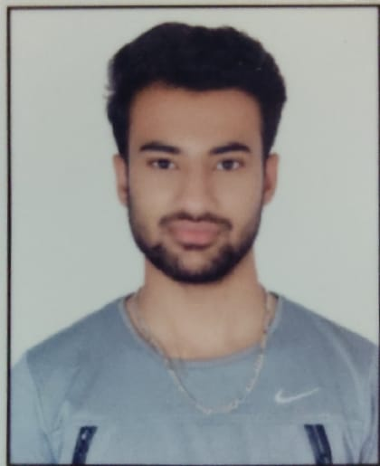

My Resume
My Resume

Summary:
An Efficient and highly motivated individual with a natural responsible and carring attitude.I Am a confident individual looking for a new opportunity.Find a challenging position to meet my skills and education.
Education:
- 2017-2020 Guru Nanak Dev University,Bachelors In Journalism and Mass Communication
- 2015-2017 Luvdale Senior School,Senior Secondary in Commerce (68%)
- 2015 Luvdale Senior School (8CGPA)
- Webberz.Educom.Ltd Amritsar English Speaking Personality Development Course
Skills:
- Team Work
- Pro Active
- Efficient
- Work with in given Time Period
- Flexible
Work Experience:
- Have Completed an internship as a Reporter and Writer with a leading newspaper.(Dna Publications of Zee news for one month (June 2018-July 2018).
- Awarded a Trophy for Winning a public speaking competion organized by Webberz.Ed.com.ltd)
- Done Web Development Course in HTML,Java and CSS From Udemy.
Languages:
Contact Details